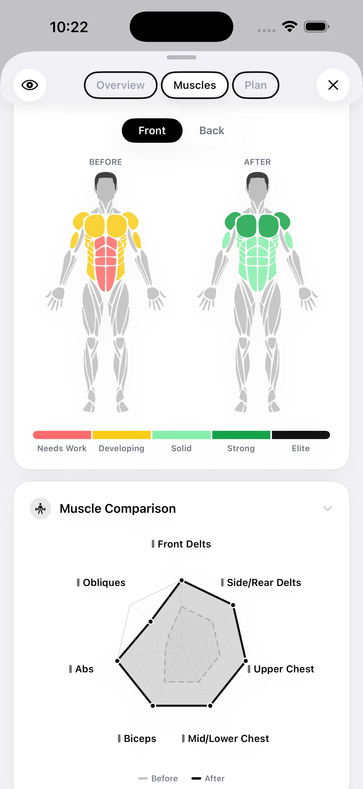
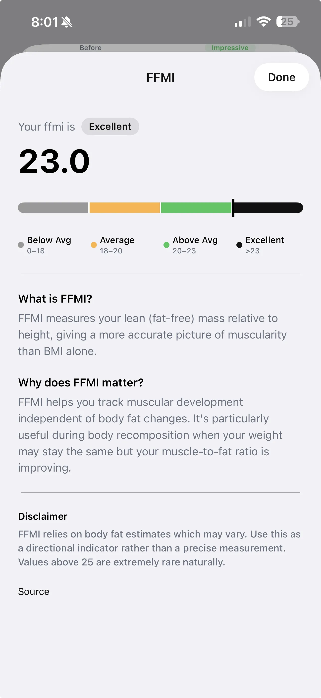

A 5'10" competitive powerlifter weighing 220 lbs at 10% body fat has a BMI of 31.6. The clinical classification: obese. The actual situation: one of the leanest, most muscular people you'll meet.
BMI was developed in the 1830s to describe population-level weight distributions — not to assess individuals, and certainly not athletes who carry significant muscle mass. For anyone who lifts seriously, it is close to useless as a personal health metric.
The four metrics that actually tell you what's happening to your body composition — body fat percentage, lean mass, FFMI, and even BMI used correctly — each measure something different and become most useful when you understand how they fit together. This is the complete guide.
The Four Metrics: Quick Reference
| METRIC | WHAT IT MEASURES | FORMULA | USEFUL FOR LIFTERS? |
|---|---|---|---|
| BMI | Weight relative to height — no distinction between fat and muscle | kg ÷ m² | No — systematically overcalls muscular people as overweight or obese |
| Body fat % | Fat as a percentage of total body weight | Fat mass ÷ total body mass × 100 | Yes — core metric for tracking composition changes |
| Lean mass | Everything that isn't fat: muscle, bone, water, organs | Body weight × (1 − BF%) | Yes — tracks the absolute size of your muscle-inclusive frame |
| FFMI | Fat-free mass normalized for height — the lifter's BMI equivalent | Lean mass (kg) ÷ height (m)² | Yes — the only metric that meaningfully benchmarks muscular development |
Metric 1: BMI — What It Gets Right and Wrong
BMI has one legitimate use case: population-level health screening where individual body composition measurement is impractical. At the group level, higher BMI correlates with higher rates of metabolic disease because most people with high BMI carry excess fat, not excess muscle.
The problem is applying that population correlation to an individual who lifts. Muscle is significantly denser than fat — the same volume of muscle weighs more. A person who has spent years building muscle will have a higher BMI than a sedentary person of identical height and body fat percentage. The scale doesn't know the difference between fat mass and muscle mass, and neither does the BMI formula.
| PERSON | HEIGHT | WEIGHT | BODY FAT % | BMI | BMI CLASSIFICATION |
|---|---|---|---|---|---|
| Competitive powerlifter | 5'10" | 220 lbs | 10% | 31.6 | Obese |
| Recreational lifter, 3 yrs | 5'10" | 195 lbs | 18% | 28.0 | Overweight |
| Sedentary office worker | 5'10" | 195 lbs | 28% | 28.0 | Overweight |
The recreational lifter and the sedentary office worker have identical BMIs but radically different body compositions. BMI cannot distinguish them. Body fat percentage can — and that's the entire argument for why lifters need better metrics.
The one context where BMI still holds value for a lifter: annual primary care screenings. Your doctor uses it because it's standardized and fast. You can mentally note that it's not meaningful for your specific situation without needing to argue about it. Use the other metrics for your own tracking decisions.
Further reading: Body Fat Percentage vs BMI — Why Lifters Need a Better Metric
Metric 2: Body Fat Percentage
Body fat percentage is the fraction of your total body mass that is fat tissue. It is the most fundamental metric for tracking composition changes because it captures the ratio that actually matters: how much of you is fat versus everything else.
What's "good" depends on your goal
| GOAL | MEN — TARGET RANGE | WOMEN — TARGET RANGE | NOTES |
|---|---|---|---|
| Competition lean | 4–7% | 10–14% | Unsustainable; requires peak conditions |
| Aesthetic lean (visible abs) | 8–12% | 15–19% | Achievable and sustainable for most lifters |
| Athletic / performance | 12–18% | 18–24% | Optimal range for most strength athletes |
| Health-optimal | 15–20% | 22–28% | ACE norms for fitness category |
| Bulking / muscle-building phase | Up to 20–22% | Up to 28–30% | Deliberate surplus; cut when approaching upper bound |
Body fat percentage is not static — it moves with your diet, training, and recovery. Tracking the trend over months, rather than individual readings, is what tells you whether your program is working.

How to measure body fat %
Every measurement method has tradeoffs. The right choice depends on what you're optimizing for — accuracy, cost, or frequency:
| METHOD | ACCURACY | BEST FOR | LIMITATIONS |
|---|---|---|---|
| DEXA scan | ±1–2% | Quarterly benchmarking | $50–150 per scan; requires travel |
| Hydrostatic weighing | ±1–2% | Research and clinical settings | Rare facilities; requires full submersion |
| AI photo analysis | ±2–4% | Monthly progress tracking | Indirect estimate from visual data |
| BIA scale | ±3–5% | Daily trend monitoring | Heavily hydration-sensitive; single readings unreliable |
| Skinfold calipers | ±3–5% (user-dependent) | Low-cost repeat measurements | Technique-sensitive; misses visceral fat |
| Navy method (circumference) | ±3–6% | Rough estimate without equipment | Formula-based; underestimates very muscular builds |
For most lifters, the practical stack is: DEXA scan once or twice a year as a clinical anchor, AI photo analysis or BIA scale for monthly progress tracking in between.
Further reading: Every Way to Measure Body Fat, Ranked
Metric 3: Lean Mass
Lean mass is everything in your body that isn't fat: skeletal muscle, bone, water, connective tissue, and organs. It is sometimes used interchangeably with "muscle mass," but that is imprecise — muscle mass is specifically skeletal muscle, which is a subset of lean mass.
The distinction matters practically. A BIA scale reports "lean mass," which includes water, bone, and organ mass alongside skeletal muscle. DEXA similarly reports lean mass regionally. Neither gives you skeletal muscle mass in isolation without more sophisticated analysis. When someone says their lean mass went up 5 lbs, what increased could be any combination of muscle, retained water, or even bone density improvements.
Why lean mass matters more than total weight
Lean mass is the denominator that makes body fat percentage meaningful. Two people weighing 185 lbs might have very different body fat percentages — one with 155 lbs of lean mass (16% BF) and one with 140 lbs of lean mass (24% BF) look and perform differently even though they weigh the same.
During a body recomposition phase — losing fat while building muscle — total weight may barely change while lean mass increases and fat mass decreases. The scale is useless in this context. Lean mass and BF% together tell the actual story.

GainFrame's muscle map breaks down muscle development across 12 body regions — giving you a more granular picture than a single lean mass number. A lifter with high total lean mass might still have lagging posterior chain development that the overall number obscures.
Further reading: Lean Mass vs Muscle Mass: What's the Difference?
Metric 4: FFMI — The Lifter's Benchmark
Fat-Free Mass Index (FFMI) normalizes lean mass for height, the same way BMI normalizes weight for height — but without BMI's fatal flaw of not distinguishing fat from muscle. Because it uses fat-free mass (not total mass), it directly measures how much muscle-inclusive tissue you've built relative to your frame size.
The formula:
Example: 80 kg lean mass, 1.78m height → 80 ÷ (1.78²) = 80 ÷ 3.17 = 25.2
FFMI ranges for men
| FFMI | CLASSIFICATION | WHAT IT LOOKS LIKE |
|---|---|---|
| Below 18 | Below average | Little visible muscularity; beginner or sedentary |
| 18–20 | Average | Some muscle visible; recreational gym-goer territory |
| 20–22 | Above average | Clearly muscular; consistent training for 2+ years |
| 22–23 | Excellent | Noticeably developed; strong intermediate lifter |
| 23–25 | Superior | Advanced lifter; years of dedicated training |
| 25+ | Exceptional / natural limit | Near or at the genetic ceiling for drug-free development; rare |
FFMI ranges for women
| FFMI | CLASSIFICATION | WHAT IT LOOKS LIKE |
|---|---|---|
| Below 14 | Below average | Minimal muscle development |
| 14–16 | Average | Recreational exerciser; some visible tone |
| 16–18 | Above average | Clearly toned; consistent strength training |
| 18–20 | Excellent / superior | Noticeably muscular; advanced lifter |
| 20+ | Exceptional / natural limit | Near or at genetic ceiling for drug-free women; elite athletes |

The natural ceiling: what FFMI tells you about limits
A 1995 study by Kouri et al. compared FFMI scores of drug-free athletes against known steroid users. The drug-free group rarely exceeded FFMI 25, while steroid users commonly did. This established an informal natural ceiling: an FFMI above 25 in a man, or above ~20 in a woman, is uncommon without pharmacological assistance.
This ceiling is a guideline, not a hard rule — genetics vary, and the original study had a modest sample. But it is directionally useful: if your FFMI is 22 and you've been training seriously for 3 years, you're well within natural range and still have room to grow. If it's 24 and you've been training for 10 years, you're close to the limit of what most people achieve drug-free.
Further reading: What Is FFMI? The Complete Guide · FFMI Chart: Ranges and What Your Score Means
How the Four Metrics Interact
Understanding each metric individually is useful. Understanding how they move together during different training phases is where the insight actually lives.
During a bulk (muscle-building phase)
- Scale weight: increases (muscle + fat + water)
- Body fat %: may increase slightly if surplus is aggressive
- Lean mass: increases — this is the goal
- FFMI: increases as lean mass grows
- BMI: increases — useless signal
During a cut (fat loss phase)
- Scale weight: decreases
- Body fat %: decreases — this is the goal
- Lean mass: ideally stable or slightly decreased; muscle loss is minimized with adequate protein and training
- FFMI: ideally stable or slightly decreased
- BMI: decreases — useless signal
During recomposition (losing fat and gaining muscle simultaneously)
- Scale weight: nearly unchanged — the most misleading scenario
- Body fat %: decreasing
- Lean mass: increasing
- FFMI: increasing
- BMI: nearly unchanged — completely misses the transformation
The Practical Tracking Stack
You don't need to measure everything perfectly all the time. The goal is enough signal to make good decisions without spending every week in a lab. Here is a realistic tracking protocol for a serious lifter:
Your clinical anchor. Gives you accurate body fat %, lean mass, FFMI (calculated from lean mass + height), and android fat mass (visceral fat proxy). $50–$150 at BodySpec or DexaFit. Schedule one at the start and end of each major training phase.
Consistent photos (same lighting, same pose, same time of day) give you a BF% trend between DEXA scans and make visible the subcutaneous changes that numbers alone don't show. GainFrame's Deep Dive Report adds FFMI and muscle group scoring on top of the photo data.
Weigh yourself daily, take the 7-day average. Single daily readings have too much noise from water, food weight, and glycogen. The weekly average removes most of it. Use it as a directional signal, not a precise measure of fat or muscle.
Lean mass (kg) ÷ height (m)². Tracking FFMI across scans tells you whether your fat-free development is progressing — the one number that captures what years of serious training actually builds. GainFrame calculates this automatically in the Deep Dive Report.
Note it at your doctor's appointment. Don't track it, don't optimize for it, don't let it demoralize you when it puts a 190 lb lean athlete in the overweight category.
Putting It Together: Reading Your Own Metrics
Here is how to interpret the combination of signals rather than any single number:
| WHAT YOU SEE | WHAT IT MEANS | WHAT TO DO |
|---|---|---|
| Weight up, BF% stable, FFMI up | Clean bulk — gaining muscle without excessive fat | Continue; reassess if BF% starts rising above threshold |
| Weight stable, BF% down, FFMI up | Recomposition — the best outcome for many intermediate lifters | Stay the course; this is working |
| Weight down, BF% down, FFMI stable | Successful cut — losing fat without losing muscle | Continue; maintain high protein to preserve lean mass |
| Weight down, BF% stable, FFMI down | Muscle loss — cut is too aggressive or protein too low | Reduce deficit; increase protein; add resistance training volume |
| Weight up, BF% up, FFMI stable | Fat gain without muscle gain — surplus without adequate training stimulus | Reduce surplus; audit training intensity and progressive overload |